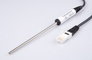

CMA0511© 2018, ProtoIt Platform: INFENTO |  |
Beschrijving:
De temperatuursensor heeft een bereik van -25°C tot 125°C. De gemeten temperatuur kan in Celcius en in Kelvin worden weergegeven.
Onderdelen:
CMA Temperatuursensor
Zendt de signalen:
| Temperatuur (ºC) | De gemeten temperatuur in Celcius. |
| Temperatuur (K) | De gemeten temperatuur in Kelvin. |